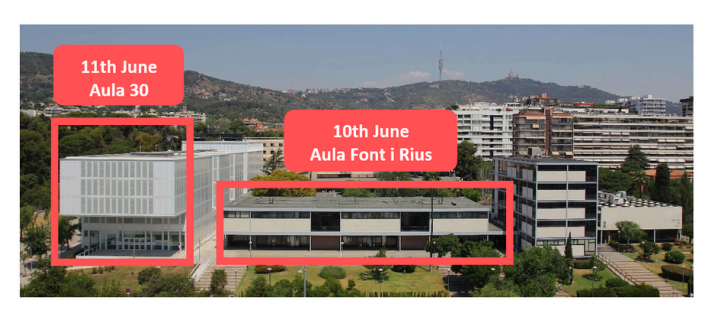

International seminar
INTERNATIONAL SEMINAR
URBAN TRANSFORMATIONS, DEMOGRAPHIC CHANGE AND SPATIAL EDUCATION INEQUALITIES IN GLOBAL CITIES
Barcelona
10 - 11 June 2025
Rationale
Urban transformation and socio-spatial reconfiguration are key forces shaping contemporary societies. Globalization has deepened social fragmentation and polarization, driving inequalities and reshaping urban landscapes. Since the mid-1970s, rising social inequality and the weakening capacity of national and local governments to counteract it have intensified residential segregation and economic disparities. The nature of segregation and other spatial inequalities varies across global cities, shaped by urban histories, economic restructuring, welfare state shifts, and housing policies.
In recent years, these trends have accelerated due to significant demographic shifts. Migration flows and urban policies have altered the social composition of neighbourhoods and schools, while touristification and gentrification have transformed urban landscapes, influencing education inequalities. Simultaneously, urban and education policies have increasingly adopted neoliberal approaches, seen in housing market liberalization and expanded school choice policies.
The interplay between urban transformations and education policies is central to shaping socio- spatial inequalities in education. Spatial restructuring influences school hierarchies, reshapes local education markets, and reinforces links between residential and school segregation. These dynamics intersect with policies on school admissions, the diversification of educational supply, and the redefinition of catchment areas, often producing uncertain effects on socio-spatial inequalities. The complex interactions between housing markets, education policies, and family strategies generate emerging forms of educational inequality that remain insufficiently explored. This seminar brings together researchers from diverse urban contexts and disciplines to examine how urban change, spatial inequalities, and education policies intersect to shape education inequalities. Key themes include:
The impact of urban transformations, migration, and demographic shifts on school segregation.
The role of school choice policies, school admission regulations and processes, and parental strategies in shaping educational inequalities.
Patterns of school choice and student mobility in urban settings.
Intersections between housing policies, urban renewal, and educational access.
The effects of gentrification on school composition and educational outcomes. Policy responses and interventions to reduce school segregation and promote equity.
Coordinated by
Xavier Bonal (UAB), Sheila González (UB), Adrián Zancajo (UAB)
Programme
June 10 — Aula Font i Rius (Old building)
09:00 Welcome and introduction
09:30 Session 1. Urban and demographic change in the global city
Chair: Xavier Bonal
Neighbourhood change and population shifts in southern European cities: Key processes and trends
Antonio López GayThe mutations of residential segregation: Beyond gentrification
Daniel SorandoResidential specialisation and inequality across municipalities: Trends in the Barcelona metropolitan region
Ismael Blanco
11:00 Coffee break
11:30 Session 2. New patterns of school segregation in urban settings
Chair: Isabel Ramos Lobato
Intersectional segregation: Conceptualization and application to the case of schooling in Brazil
Rob J. GruijtersEducational transitions in place: How local school composition affects educational careers
Costanzo Ranci & Francisco Gabriel FerraioliShaping school and class segregation: The role of institutional and everyday school practices
Marta Cordini, Carlotta Casiagli, Giulia Marroccoli & Berenice Scandone
13:00 Lunch
14:30 Session 3. School choice in changing urban environments
Chair: Quentin Ramond
School choice and access to effective schools
Ellen GreavesDo gentrifyers fly from local schools? A case study of Barcelona
Xavier Bonal & Sheila GonzálezSchool choice and spatial inequalities: A survey experiment on parental preferences for primary schools across neighborhoods
Håkan Forsberg & Andreas Alm Fjellborg
16:00 Coffee break
16:30 Session 4. Actors’ responses to urban and demographic transformations
Chair: Sheila González
Participation of immigrants in new arrival neighbourhoods: Schools as places of encounter?
Isabel Ramos LobatoTeacher segregation in the frame of labour-market provision, school segregation and residential segregation
Sonja KosunenEmotional experiences and stigma among beneficiaries of Barcelona’s desegregation policies
Andrea Jover, Martí Manzano, Berta Llos & Andreu Termes
June 11 — Aula 30 (New building)
09:30 Session 5. Neighbourhood effects and school segregation
Chair: Adrián Zancajo
The role of schools’ surrounding neighbourhoods in school choice and school segregation
Quentin RamondNeighbourhood reputation, school choice, and school segregation
Eduardo TapiaGentrification and school change: Exploring the dilemmas of diversity in the local educational space
Marcel Pagès, Pablo Neut & Nur Garcia-Borés
11:00 Coffee break
11:30 Session 6. Education policies to tackle school segregation
Chair: Marta Cordini
Does school zoning (school catchment areas) help to reduce school segregation? Lessons from France
Marco Oberti & Lise LécuyerImpacts and effects of desegregation policies in Barcelona
Adrián Zancajo, Sheila González & Edgar QuilabertWhen regulating school selectivity is not enough: Limits of the Chilean centralized school admission system in reducing inequality
Alejandro Carrasco
Venue
Faculty of Law (University of Barcelona) Avinguda Diagonal 684, 08034 Barcelona

Seminar rooms
10th June: Aula Font i Rius is located on the first floor of the main building (old building) of the Faculty of Law
11th June: Aula 30 is located on the ground floor of the new building
List of participants
| Name | Institution |
|---|---|
| Ismael Blanco | IGOP-UAB |
| Xavier Bonal | GEPS-UAB |
| Alejandro Carrasco | Universidad Católica de Chile |
| Marta Cordini | Politecnico di Milano |
| Sheila González Motos | Universitat de Barcelona |
| Ellen Greaves | University of Exeter |
| Rob J. Gruijters | University of Bristol |
| Francisco Ferraioli | Politecnico di Milano |
| Andreas Alm Fjellborg | Uppsala University |
| Håkan Forsberg | Uppsala University |
| Nur Garcia-Borés | GEPS-UAB |
| Andrea Jover | GEPS-UAB |
| Sonja Kosunen | University of Eastern Finland |
| Lise Lécuyer | Sciences Po |
| Antonio López-Gay | CED-UAB |
| Berta Llos | GEPS-UAB |
| Martí Manzano | GEPS-UAB |
| Giulia Marroccoli | Politecnico di Milano |
| Pablo Neut | GEPS-UAB |
| Marco Oberti | Science Po |
| Marcel Pagès | Universitat de Barcelona |
| Edgar Quilabert | GEPS-UAB |
| Quentin Ramond | Mayor University, Chile |
| Isabel Ramos Lobato | ILS-Dortmund |
| Costanzo Ranci | Politecnico di Milano |
| Berenice Scandone | Politecnico di Milano |
| Daniel Sorando | Universidad de Zaragoza |
| Eduardo Tapia | Institute of Analytical Sociology |
| Andreu Termes | GEPS-UAB |
| Adrián Zancajo | GEPS-UAB |
This seminar is organized by the Interdisciplinary Group on Education Policies (GIPE), with support from the Government of Catalonia (SGR-Cat 2021, Ref. 00943), and is part of the project The Effects of Gentrification on Educational Inequalities (GENTRED), funded by the Spanish Ministry of Science and Technology (PID2022-137183NB-I00).
20:00 Social dinner — Restaurant Pomarada